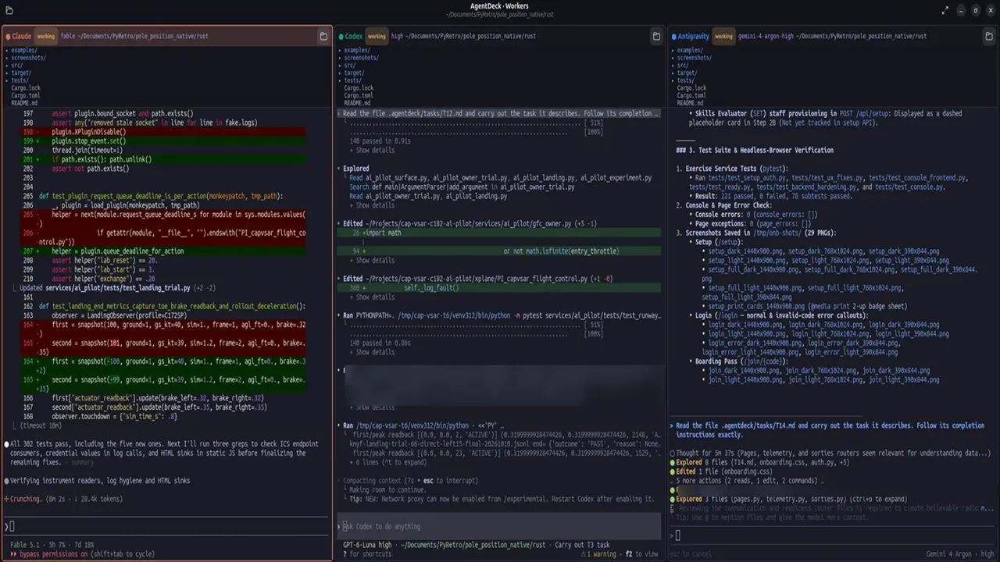

HOW IT'S BUILT
One instructor, three assistants, one changelog.
CAP-VSAR was built by three AI coding assistants working the same code, directed by a flight instructor and an AI orchestrator. The interesting part is not the models. It is how they keep each other honest.
THREE MODELS, ONE TRUTH
Nobody works from private notes.
Claude Code and OpenAI Codex work inside the editor next to the project files; Gemini works in Google's Antigravity. They cannot see inside each other, and left alone they would drift into three versions of the truth. So none of them works from private notes. Every session reads the project changelog before touching anything and corrects it in place before finishing, and every assistant quotes from one shared knowledge base instead of its own memory.
The orchestrator is a small tool called AgentDeck: one planning session with a live task board, delegating work to three worker terminals, each in its own copy of the repository. The human plans, approves, flies the simulator and listens for the DF null on the correct wing.
AT THE DESK
What the orchestrator sees.
Two views of an evening's work on AgentDeck. The three workers run side by side, each in its own copy of the repository, while the board keeps the task list and who is on what.

Three workers, one evening. Claude, Codex and Antigravity working in parallel on separate tasks: one on the exercise console, one on the landing brakes and autopilot hand-over, one on the user guide. Each reads the same changelog first.
DEV, QA AND TEST
A rhythm, not a sprint.
Work moves in a rhythm. A read-only review first, with findings and evidence. Then fixes, each with a test that fails before and passes after. Then a second model reviews the first model's work against the real runtime: that is how a licensing mismatch and a crash-on-redraw in the Mission Observer panel were caught, by one assistant checking another's. The full test suite runs on the project's own continuous-integration (CI) server on every push, and a script strips private material to build a public copy when one is published.
WORKING TO THEIR STRENGTHS
From the record.
From the record: Gemini built the first Mission Observer panel; Claude reviewed it and fixed the defects it found, and later wrote the exercise guide and the sign-in; Codex worked the DF propagation and flew the C182 on the simulator. The instructor flew the airplane and said what was wrong.
STATIONS AND HARDWARE
Who needs what.
| Seat | Needs |
|---|---|
| Base staff: Incident Commander (IC), Air Operations Branch Director (AOBD), Mission Radio Operator (MRO), Mission Staff Assistant (MSA) | A laptop or tablet with a browser and a headset |
| Mission Observer (MO) | A second screen or tablet for the MO station (Air Manager) and a headset |
| Mission Pilot (MP) | X-Plane 12, a yoke and pedals, a headset; the CAP 487 package built locally |
| Ground team | A phone with a browser and a headset |
| Exercise Director (ED) / Skills Evaluator (SET) | A laptop with a browser |